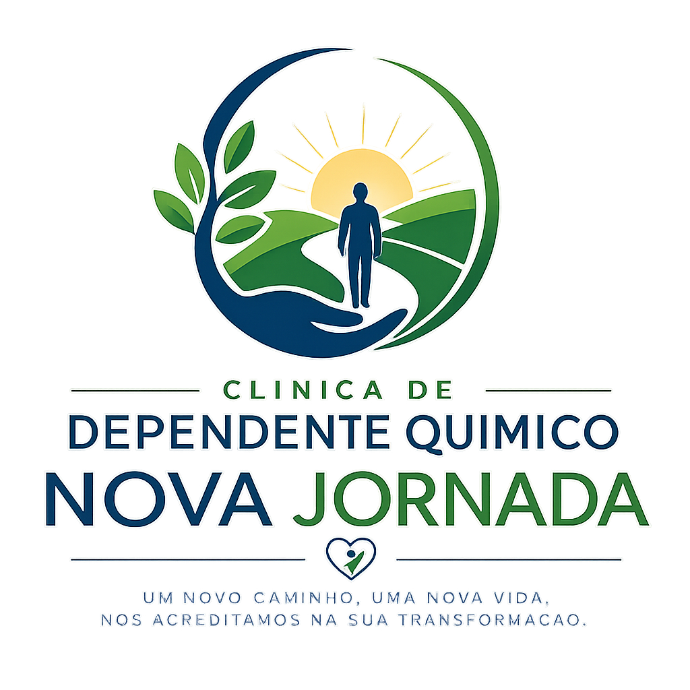

Um novo caminho começa com um primeiro passo.
Sabemos que pedir ajuda não é fácil. Nossa equipe está preparada para acolher você e sua família com respeito, cuidado e profissionalismo em cada etapa da recuperação.

Clínica Nova Jornada consolida novo conceito de excelência, segurança e humanização em saúde mental
A Clínica Nova Jornada apresenta uma abordagem metodológica rigorosa, pautada em evidências científicas e nos mais elevados valores humanistas.
Fundada em 2026, a instituição propõe um novo conceito de cuidado em saúde mental, convergindo excelência técnica e sensibilidade humana em todas as suas diretrizes. Nosso modelo de tratamento é integral, englobando de forma sistêmica os aspectos físicos, psíquicos, sociais e integrativos do indivíduo. Toda a assistência é realizada em um ambiente acolhedor, planejado estrategicamente para proporcionar o máximo de conforto, segurança e bem-estar. A evolução terapêutica é monitorada de perto por uma equipe multidisciplinar, garantindo que o paciente e seus familiares sejam plenamente informados e envolvidos em cada etapa do processo, sob o pilar da transparência e do acolhimento.
Acreditado Pleno — ONA Nível 2
Reconhecida pelo rigor técnico e pelo compromisso intransigente com a segurança do paciente, a instituição é detentora do selo concedido pela Organização Nacional de Acreditação. Esta prestigiada certificação nacional chancelando a excelência da Clínica Nova Jornada.
Abordagem Terapêutica
A Clínica Nova Jornada adota uma linha de tratamento personalizada e multidisciplinar, utilizando protocolos de alta eficácia clínica. Entre as frentes terapêuticas oferecidas, destacam-se:
- Acompanhamento médico-psiquiátrico contínuo
- Terapia cognitivo-comportamental (TCC)
- Terapia familiar e Entrevista motivacional
- Oficinas ocupacionais e Práticas integrativas
- Meditação e Educação física orientada
Sobre a Clínica
A Clínica Nova Jornada oferece atendimento humanizado para pessoas que desejam reconstruir suas vidas através de um tratamento digno, seguro e especializado.
Por que escolher a Nova Jornada?
Atendimento Humanizado
Cuidamos de cada paciente com respeito, acolhimento e dedicação.
Equipe Especializada
Profissionais preparados para acompanhar todas as etapas da recuperação.
Sigilo Absoluto
Todo atendimento é realizado com ética, respeito e total confidencialidade.
Estrutura Completa
Ambiente preparado para oferecer conforto, tranquilidade e segurança.
Como podemos ajudar?
Dependência Química
Tratamento individualizado para recuperação física, emocional e social.
Alcoolismo
Acompanhamento especializado para pessoas que desejam reconstruir sua qualidade de vida.
Apoio à Família
Orientação e suporte aos familiares durante todas as etapas do tratamento.
Internação Humanizada
Ambiente seguro, confortável e preparado para uma recuperação completa.
Cinco passos para uma nova vida.
Primeiro Contato
Nossa equipe realiza um atendimento acolhedor e totalmente sigiloso.
Avaliação
Entendemos cada caso para indicar o tratamento ideal.
Internação
O paciente inicia seu processo de recuperação com acompanhamento profissional.
Recuperação
Atividades terapêuticas, acompanhamento médico e psicológico.
Reintegração
Preparação para voltar ao convívio familiar e social.
Um ambiente preparado para cuidar de quem você ama.


Recuperação com acolhimento, respeito e profissionalismo.
Equipe Especializada
Profissionais capacitados para acompanhar cada etapa da recuperação.
Sigilo Absoluto
Todo atendimento acontece com total discrição e respeito.
Atendimento Humanizado
Cuidamos da pessoa antes da dependência.
Estrutura Completa
Ambiente preparado para oferecer conforto e segurança.
Perguntas Frequentes sobre Tratamento e Internação
Encontre respostas claras sobre dependência química, alcoolismo, internação e como escolher a clínica de recuperação mais adequada para cada situação.
A internação pode ser voluntária, quando o paciente aceita o tratamento, ou involuntária, quando a família e um médico entendem que ele precisa de ajuda imediata. No início, realizamos uma avaliação médica e psicológica completa, definimos o plano terapêutico e, se necessário, oferecemos remoção segura e humanizada. Durante toda a estadia, o paciente é acompanhado por médicos, psicólogos, terapeutas e equipe de enfermagem, com foco em desintoxicação, reabilitação e retomada da vida social.
O tempo pode variar bastante de acordo com a gravidade do caso, a substância utilizada e a resposta do paciente ao tratamento. Em média, os programas duram entre 90 e 180 dias, podendo ser ajustados conforme a evolução clínica. O tratamento inclui desintoxicação assistida, terapias individuais e em grupo, atividades ocupacionais e estratégias de prevenção de recaídas, sempre com acompanhamento próximo da equipe.
Essa modalidade é indicada quando o paciente não reconhece sua condição e coloca em risco a própria vida ou a de terceiros. É necessário laudo médico e a solicitação de um familiar de primeiro grau ou responsável legal. Todo o processo é realizado com segurança, ética e respeito aos direitos do paciente, seguindo a legislação vigente e comunicando o Ministério Público em até 72 horas.
Sim. A presença da família é essencial para o sucesso da recuperação. Realizamos encontros de orientação, grupos de apoio e momentos de escuta, para fortalecer os vínculos e ajudar todos a compreender melhor a doença. Também trabalhamos questões práticas do dia a dia, limites saudáveis e prevenção de recaídas, preparando o ambiente familiar para o retorno do paciente.
Sim. Após a alta, é elaborado um plano de continuidade que pode incluir consultas de manutenção, grupos de apoio e acompanhamento psicológico ou psiquiátrico. O objetivo é ajudar o paciente a manter a sobriedade, lidar com os desafios do cotidiano e fortalecer sua reinserção social, sempre com apoio da família. Esse cuidado extra aumenta muito as chances de sucesso a longo prazo.
O primeiro passo pode mudar uma vida inteira.
Nossa equipe está preparada para acolher você e sua família com respeito, sigilo e atendimento humanizado.
Falar com nossa equipe